<meta charset="utf-8">
<title>JO HYEON CHAE — Portfolio</title>
<style>
  @page { size: A4 landscape; margin: 0; }
  *{ margin:0; padding:0; box-sizing:border-box; }
  html{ -webkit-print-color-adjust:exact; print-color-adjust:exact; }
  body{
    font-family:"Malgun Gothic","Apple SD Gothic Neo","Noto Sans KR","Segoe UI",sans-serif;
    color:#17150f; background:#cbc8c1; line-height:1.6; word-break:keep-all;
  }
  .page{
    position:relative; width:297mm; height:210mm; background:#fff;
    margin:0 auto; overflow:hidden; page-break-after:always;
  }
  .page:last-child{ page-break-after:auto; }
  .kick{ font-size:9pt; letter-spacing:.24em; text-transform:uppercase; font-weight:800; }

  /* ============ COVER ============ */
  .cover{ padding:22mm 24mm; display:flex; flex-direction:column; }
  .cv-top{ display:flex; justify-content:space-between; align-items:flex-start;
    font-size:9.5pt; letter-spacing:.18em; text-transform:uppercase; color:#8a847a; font-weight:700; }
  .cv-photo{ width:34mm; height:34mm; border-radius:50%; object-fit:cover; }
  .cv-mid{ margin:auto 0; }
  .cv-role{ font-size:11pt; letter-spacing:.24em; text-transform:uppercase; color:#b5730a; font-weight:800; margin-bottom:8mm; }
  .cv-name{ font-size:76pt; line-height:.94; font-weight:800; letter-spacing:-.03em; }
  .cv-name small{ display:inline-block; font-size:22pt; font-weight:700; color:#6f6a62; letter-spacing:.02em; margin-left:8mm; }
  .cv-tag{ margin-top:11mm; font-size:16pt; font-weight:600; max-width:210mm; line-height:1.5; }
  .cv-tag b{ color:#b5730a; }
  .cv-bar{ display:flex; height:6mm; border-radius:3mm; overflow:hidden; margin-top:12mm; }
  .cv-bar i{ flex:1; }
  .cv-bot{ display:flex; justify-content:space-between; margin-top:7mm; font-size:10pt; color:#5f5a52; }
  .cv-bot b{ color:#17150f; }

  /* ============ ABOUT ============ */
  .about{ padding:18mm 20mm; }
  .ab-lead{ font-size:16pt; font-weight:700; line-height:1.5; letter-spacing:-.01em; max-width:230mm; }
  .ab-lead .q{ display:block; margin-top:3mm; font-size:11pt; font-weight:600; color:#6f6a62; }
  .ab-cols{ display:grid; grid-template-columns:1fr 1fr 1.15fr; gap:14mm; margin-top:11mm; }
  .ab-cols h4{ font-size:8.5pt; letter-spacing:.2em; text-transform:uppercase; color:#b5730a; font-weight:800; margin-bottom:3mm; }
  .tl{ list-style:none; }
  .tl li{ display:grid; grid-template-columns:16mm 1fr; gap:6px; padding:2.1mm 0; border-bottom:1px solid #ece7de; font-size:9.5pt; }
  .tl li b{ color:#8a847a; font-weight:700; }
  .chips{ display:flex; flex-wrap:wrap; gap:5px; }
  .chips span{ border:1px solid #e6e1d8; background:#faf8f4; border-radius:20px; padding:3px 10px; font-size:8.5pt; font-weight:600; color:#5f5a52; }
  .wk{ list-style:none; }
  .wk li{ display:flex; justify-content:space-between; gap:8px; align-items:baseline; padding:2.5mm 0; border-bottom:1px solid #ece7de; font-size:10pt; }
  .wk li b{ color:#b5730a; font-weight:800; margin-right:5px; }
  .wk li em{ font-style:normal; color:#8a847a; font-size:8.5pt; letter-spacing:.02em; }

  /* ============ PROJECT — HERO PAGE ============ */
  .hero{ display:flex; }
  .hero .left{ width:43%; height:210mm; background:var(--brand); color:#fff; padding:20mm 16mm; display:flex; flex-direction:column; }
  .hero .num{ font-size:15pt; font-weight:800; letter-spacing:.1em; color:rgba(255,255,255,.55); }
  .hero .cat{ display:inline-block; align-self:flex-start; margin-top:4mm; font-size:8.5pt; letter-spacing:.14em; text-transform:uppercase; font-weight:700; color:#fff; background:rgba(255,255,255,.16); padding:4px 11px; border-radius:4px; }
  .hero h1{ font-size:44pt; font-weight:800; letter-spacing:-.02em; line-height:.98; margin-top:auto; }
  .hero .ubar{ width:16mm; height:3px; background:var(--accent); margin:6mm 0; }
  .hero .tag{ font-size:13pt; font-weight:600; color:rgba(255,255,255,.9); }
  .hero .over{ font-size:10pt; line-height:1.7; color:rgba(255,255,255,.82); margin-top:6mm; }
  .hero .over b{ color:#fff; }
  .hero .meta{ margin-top:7mm; display:flex; flex-direction:column; gap:2.5mm; }
  .hero .meta div{ font-size:9pt; color:rgba(255,255,255,.82); }
  .hero .meta b{ display:inline-block; width:16mm; color:rgba(255,255,255,.55); font-weight:700; letter-spacing:.08em; text-transform:uppercase; font-size:7.5pt; }
  .hero .meta .live b{ color:var(--accent); }
  .hero .right{ width:57%; height:210mm; background:var(--panel); display:flex; align-items:center; justify-content:center; padding:16mm 16mm; }
  .browser{ width:100%; border-radius:8px; overflow:hidden; border:1px solid rgba(0,0,0,.10); box-shadow:0 12px 34px rgba(0,0,0,.18); background:#fff; }
  .browser .bar{ display:flex; align-items:center; gap:5px; padding:6px 11px; background:#ececec; }
  .browser .bar i{ width:8px; height:8px; border-radius:50%; background:#c9c9c9; }
  .browser .bar u{ margin-left:8px; font-style:normal; font-size:8pt; color:#8a847a; }
  .browser img{ width:100%; max-height:150mm; object-fit:cover; object-position:top; display:block; }

  /* ============ PROJECT — GALLERY PAGE ============ */
  .gal{ display:flex; background:var(--panel); color:var(--ink); }
  .gal .info{ width:31%; height:210mm; padding:18mm 13mm; display:flex; flex-direction:column; }
  .gal .glabel{ font-size:8.5pt; letter-spacing:.2em; text-transform:uppercase; font-weight:800; color:var(--accent); }
  .gal h2{ font-size:22pt; font-weight:800; letter-spacing:-.02em; margin-top:2mm; }
  .gal .sub{ font-size:9.5pt; color:var(--ink); opacity:.6; margin-top:1mm; }
  .gal h5{ font-size:8pt; letter-spacing:.16em; text-transform:uppercase; font-weight:800; opacity:.5; margin:8mm 0 3mm; }
  .ps{ list-style:none; }
  .ps li{ padding:2.4mm 0; border-top:1px solid var(--line2); font-size:9pt; line-height:1.5; }
  .ps li:first-child{ border-top:0; }
  .ps li b{ color:var(--accent); }
  .hl{ list-style:none; margin-top:auto; }
  .hl li{ position:relative; padding:2.2mm 0 2.2mm 6mm; border-top:1px solid var(--line2); font-size:9pt; line-height:1.45; opacity:.85; }
  .hl li:first-child{ border-top:0; }
  .hl li:before{ content:""; position:absolute; left:0; top:4.2mm; width:4px; height:4px; border-radius:50%; background:var(--accent); }

  /* gallery: web cards (2x2 tidy thumbnails) */
  .gal .cards{ width:69%; height:210mm; padding:18mm 15mm; display:grid; grid-template-columns:1fr 1fr; grid-template-rows:1fr 1fr; gap:6mm; }
  .scard{ display:flex; flex-direction:column; border-radius:7px; overflow:hidden; background:#fff; border:1px solid var(--line2); box-shadow:0 8px 20px rgba(0,0,0,.10); }
  .scard .bar{ flex:none; display:flex; align-items:center; gap:4px; padding:4px 8px; background:#ececec; }
  .scard .bar i{ width:6px; height:6px; border-radius:50%; background:#cbcbcb; }
  .scard .bar u{ margin-left:6px; font-style:normal; font-size:6.5pt; color:#8a847a; }
  .scard img{ flex:1; min-height:0; width:100%; object-fit:cover; object-position:top; display:block; }
  /* gallery: phone mockups (real device aspect, whole screen) */
  .gal .phones{ width:69%; height:210mm; padding:18mm 15mm; display:flex; gap:6mm; align-items:center; justify-content:center; }
  .ph{ flex:1; max-width:47mm; aspect-ratio:9/19; border-radius:20px; overflow:hidden; background:#fff; border:1px solid var(--line2); box-shadow:0 10px 24px rgba(0,0,0,.16); }
  .ph img{ width:100%; height:100%; object-fit:cover; object-position:top; display:block; }
  /* gallery: duo (browser + phone) */
  .gal .duo{ width:69%; height:210mm; padding:18mm 15mm; display:flex; gap:10mm; align-items:center; justify-content:center; }
  .gal .duo .scard{ flex:none; width:150mm; height:118mm; }
  .gal .duo .ph{ flex:none; width:58mm; }
  /* dark gallery (cyberpunk) */
  .gal.dark .scard, .gal.dark .ph{ border-color:#232838; box-shadow:0 10px 24px rgba(0,0,0,.5); }
  .gal.dark .scard .bar{ background:#11131c; }
  .gal.dark .scard .bar i{ background:#333; }

  /* ============ WORK: BANNERS ============ */
  .work{ padding:16mm 18mm; }
  .work .kick{ color:#17150f; }
  .work .note{ font-size:10pt; color:#5f5a52; margin-top:2mm; max-width:220mm; }
  .rule{ height:1px; background:#e6e1d8; border:0; margin:4mm 0; }
  .bgrid{ display:grid; grid-template-columns:repeat(8,1fr); gap:3mm; margin-top:5mm; }
  .bgrid figure{ border:1px solid #e6e1d8; border-radius:4px; overflow:hidden; background:#f4f1ea; }
  .bgrid img{ width:100%; height:30mm; object-fit:cover; display:block; }

  /* ============ WORK: GRAPHIC ============ */
  .ggrid{ display:grid; grid-template-columns:repeat(5,1fr); gap:7mm; margin-top:7mm; }
  .ggrid .im{ border:1px solid #e6e1d8; border-radius:6px; overflow:hidden; background:#f4f1ea; height:88mm; }
  .ggrid img{ width:100%; height:100%; object-fit:cover; object-position:top; display:block; }
  .ggrid .t{ font-size:11pt; font-weight:800; margin-top:3mm; }
  .ggrid .t small{ display:block; font-weight:600; color:#b5730a; font-size:8pt; letter-spacing:.06em; margin-top:1mm; }
  .ggrid .d{ font-size:8.5pt; color:#5f5a52; margin-top:2mm; line-height:1.5; }

  /* ============ CONTACT ============ */
  .contact{ padding:22mm 24mm; display:flex; flex-direction:column; justify-content:center; }
  .contact .big{ font-size:46pt; font-weight:800; letter-spacing:-.02em; line-height:1.05; }
  .contact .sub{ font-size:13pt; color:#5f5a52; margin-top:6mm; max-width:190mm; line-height:1.6; }
  .cinfo{ margin-top:16mm; display:grid; grid-template-columns:repeat(4,1fr); gap:10mm; max-width:210mm; }
  .cinfo b{ display:block; font-size:8.5pt; letter-spacing:.16em; text-transform:uppercase; color:#8a847a; margin-bottom:2mm; }
  .cinfo span{ font-size:13pt; font-weight:700; }
  .cfoot{ position:absolute; left:24mm; right:24mm; bottom:16mm; display:flex; justify-content:space-between; font-size:9pt; color:#8a847a; letter-spacing:.06em; border-top:1px solid #e6e1d8; padding-top:4mm; }
</style>

<!-- ============ COVER ============ -->
<section class="page cover">
  <div class="cv-top">
    <span>Portfolio 2026</span>
    
  </div>
  <div class="cv-mid">
    <div class="cv-role">Visual · Graphic / UI · UX Designer</div>
    <div class="cv-name">JO HYEON CHAE<small>조현채</small></div>
    <div class="cv-tag">Designing user behavior with <b>visual order.</b><br>보기 좋은 화면을 넘어, 정보가 행동으로 이어지는 흐름을 설계합니다.</div>
  </div>
  <div class="cv-bar">
    <i style="background:#7448DD"></i><i style="background:#0f1c34"></i><i style="background:#a9683a"></i><i style="background:#012547"></i><i style="background:#e8927c"></i><i style="background:#e8963f"></i><i style="background:#4b654c"></i><i style="background:#fcee0a"></i>
  </div>
  <div class="cv-bot">
    <span><b>Email</b>&nbsp;&nbsp;jhc2265@gmail.com</span>
    <span><b>Tel</b>&nbsp;&nbsp;010-8947-2759</span>
    <span><b>GitHub</b>&nbsp;&nbsp;github.com/jhc2265</span>
    <span><b>Web</b>&nbsp;&nbsp;jhc2265.github.io/portfolio</span>
  </div>
</section>

<!-- ============ ABOUT ============ -->
<section class="page about">
  <div class="kick" style="color:#8a847a">About</div>
  <hr class="rule">
  <div class="ab-lead">
    시각·그래픽 디자인과 UI·UX를 함께 다루는 디자이너입니다. 브랜딩·편집·배너부터 웹 퍼블리싱·반응형 구현까지, 디자인과 개발을 잇는 작업을 합니다.
    <span class="q">“예술과 일상을 하루하루 수확해 나가는 농부.”</span>
  </div>
  <div class="ab-cols">
    <div>
      <h4>Profile</h4>
      <ul class="tl">
        <li><b>이름</b><span>조현채 (Jo Hyeon Chae)</span></li>
        <li><b>생년</b><span>2003.12.15</span></li>
        <li><b>분야</b><span>Visual·Graphic · UI·UX Design</span></li>
        <li><b>연락</b><span>jhc2265@gmail.com</span></li>
      </ul>
      <h4 style="margin-top:6mm">License</h4>
      <ul class="tl">
        <li><b>2026</b><span>GTQ 일러스트 1급</span></li>
        <li><b>2022</b><span>컴퓨터그래픽스 운용기능사</span></li>
        <li><b>2018</b><span>GTQ 포토샵 1급</span></li>
        <li><b>2015</b><span>ITQ OA Master · ICDL</span></li>
      </ul>
    </div>
    <div>
      <h4>Education</h4>
      <ul class="tl">
        <li><b>2026</b><span>그린컴퓨터아카데미 (UI·UX / 웹)</span></li>
        <li><b>2024</b><span>강남대학교 유니버셜아트디자인 편입</span></li>
        <li><b>2022</b><span>시각디자인과 입학</span></li>
      </ul>
      <h4 style="margin-top:6mm">Tools</h4>
      <div class="chips">
        <span>Photoshop</span><span>Illustrator</span><span>InDesign</span><span>After Effects</span><span>Figma</span><span>GitHub</span><span>Vercel</span><span>Firebase</span>
      </div>
      <h4 style="margin-top:5mm">Skills</h4>
      <div class="chips">
        <span>UI·UX</span><span>웹 퍼블리싱</span><span>HTML·CSS·JS</span><span>반응형</span><span>배너</span><span>로고·BI</span><span>편집</span><span>모션</span>
      </div>
    </div>
    <div>
      <h4>Selected Work</h4>
      <ul class="wk">
        <li><span><b>01</b>HOLO</span><em>UI·UX · Team</em></li>
        <li><span><b>02</b>YENE</span><em>Website Redesign · Team</em></li>
        <li><span><b>03</b>cozybrew</span><em>E-commerce · Solo</em></li>
        <li><span><b>04</b>Cresto</span><em>Brand Commerce · Solo</em></li>
        <li><span><b>05</b>사각사각문구점</span><em>E-commerce · Solo</em></li>
        <li><span><b>06</b>enoughday</span><em>Web App · Solo</em></li>
        <li><span><b>07</b>Camp Lium</span><em>Brand Landing · Solo</em></li>
        <li><span><b>08</b>Cyberpunk 2077</span><em>Concept · Solo</em></li>
      </ul>
    </div>
  </div>
</section>

<!-- ================= 01 HOLO ================= -->
<section class="page hero" style="--brand:linear-gradient(140deg,#542BB4 0%,#7448DD 48%,#E95AA4 100%); --accent:#E95AA4; --panel:#f4f0fb">
  <div class="left">
    <div class="num">01</div><span class="cat">UI·UX Design · 4인 팀</span>
    <h1>HOLO</h1><div class="ubar"></div>
    <div class="tag">#혼자 살지만, #함께 살아가는 일상의 시작</div>
    <div class="over">1인 가구가 가까운 이웃과 안전하게 연결되도록 <b>지역 인증</b>과 <b>게임화 요소</b>를 결합한 지역 기반 소셜 커뮤니티 앱.</div>
    <div class="meta">
      <div><b>Role</b>온보딩·마이페이지·관리자 디자인 &amp; React 구현 (50%)</div>
      <div><b>Period</b>2026.04.22 – 05.22</div>
      <div class="live"><b>Live</b>3team-holo.vercel.app</div>
    </div>
  </div>
  <div class="right">
    <div class="browser"><div class="bar"><i></i><i></i><i></i><u>3team-holo.vercel.app</u></div>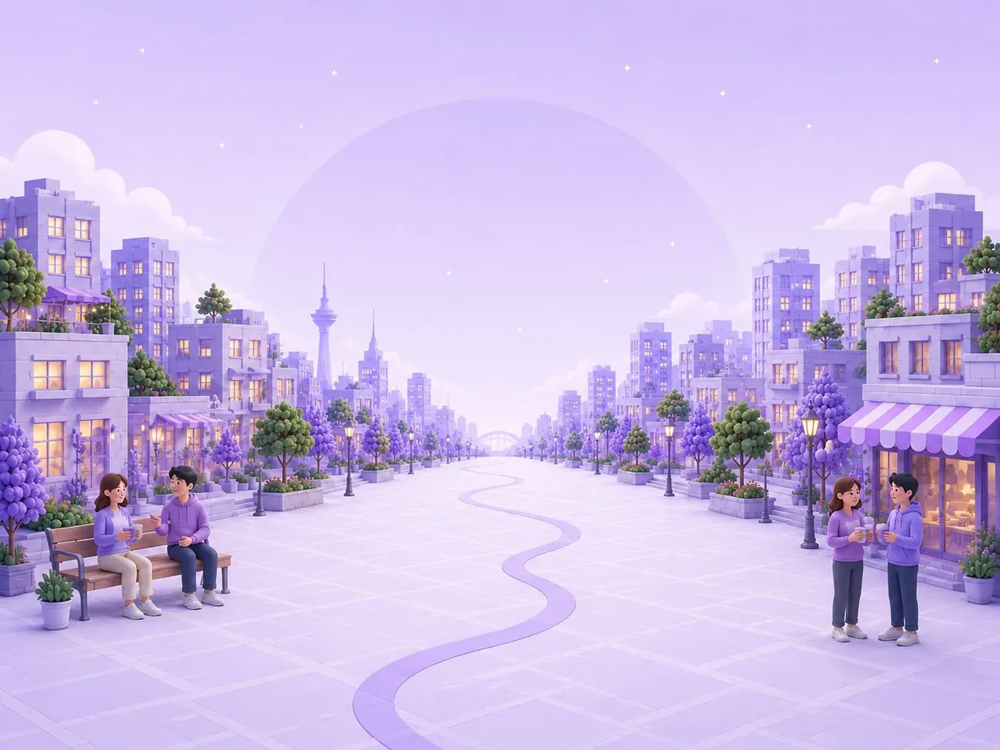</div>
  </div>
</section>
<section class="page gal" style="--panel:#f4f0fb; --ink:#241a3a; --accent:#7448DD; --line2:#e6ddf5">
  <div class="info">
    <div class="glabel">HOLO · Design</div>
    <h2>화면 설계</h2>
    <div class="sub">마이룸 · 온보딩 · 지도 · 마이페이지</div>
    <h5>Problem → Solution</h5>
    <ul class="ps">
      <li>테스트 환경 없이 실서비스 DB에서 작업 <b>→</b> 수정·배포·검증 루프와 멱등·롤백 SQL로 안전하게 관리</li>
      <li>마이룸 3D 제작비·보안 부담 <b>→</b> 2.5D 아이소메트릭 PNG와 검수된 가구만 선택하도록 제한</li>
      <li>관리자 화면이 과밀 <b>→</b> 회원·커뮤니티·리워드·콘텐츠·시스템 6대 메뉴로 구조화</li>
    </ul>
    <ul class="hl">
      <li>팀 자체 완성도 8.5/10 (실서비스 수준 85%)</li>
      <li>직접 설계·구현한 마이페이지 세부 화면 30+</li>
      <li>설문 60명 · 최고 기대 기능 "배달비 분담·공동구매" 46%</li>
    </ul>
  </div>
  <div class="phones">
    <div class="ph">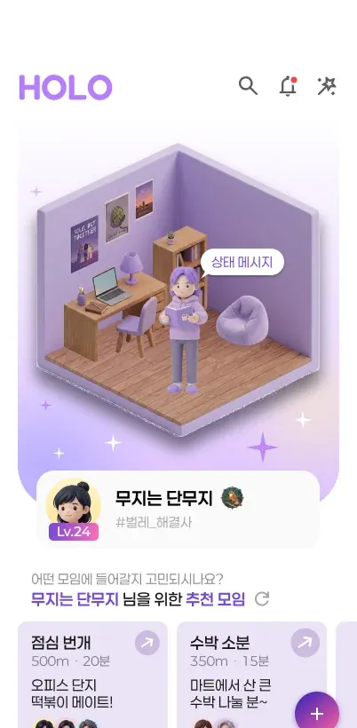</div>
    <div class="ph">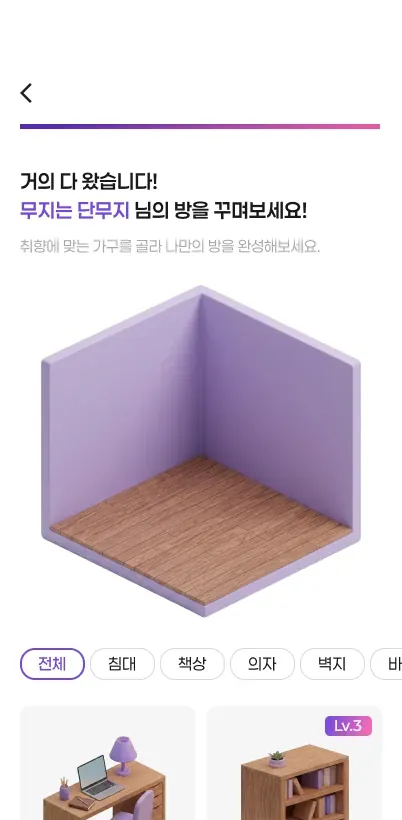</div>
    <div class="ph">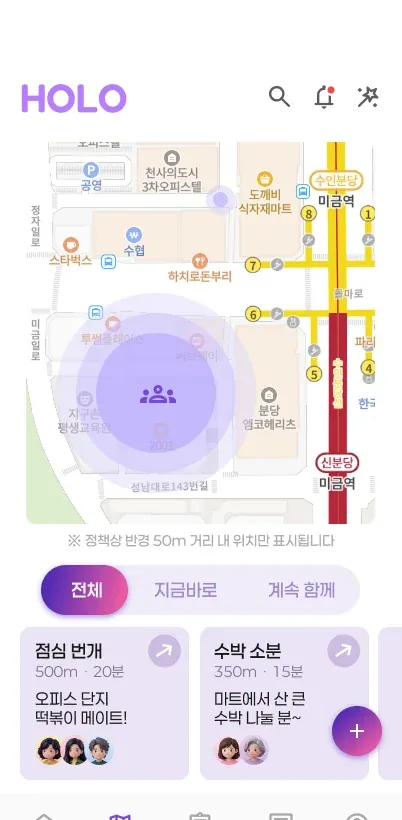</div>
    <div class="ph">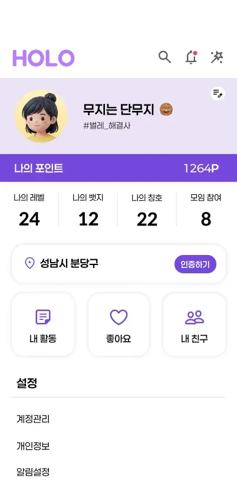</div>
  </div>
</section>

<!-- ================= 02 YENE ================= -->
<section class="page hero" style="--brand:#0f1c34; --accent:#f5a623; --panel:#f6f6f2">
  <div class="left">
    <div class="num">02</div><span class="cat">Website Redesign · 4인 팀</span>
    <h1>YENE</h1><div class="ubar"></div>
    <div class="tag">좋은 제품이, 더 잘 이해되고 선택되도록.</div>
    <div class="over">B2B 온열·환기 기업 (주)예네의 웹사이트를 <b>제품 이해 → 문의 전환</b> 흐름 중심으로 리디자인.</div>
    <div class="meta">
      <div><b>Role</b>상세페이지·제안서 기획·초기 구현 (40%)</div>
      <div><b>Period</b>2026.05.26 – 06.04</div>
      <div class="live"><b>Live</b>web5-portfolio-yene.vercel.app</div>
    </div>
  </div>
  <div class="right">
    <div class="browser"><div class="bar"><i></i><i></i><i></i><u>web5-portfolio-yene.vercel.app</u></div>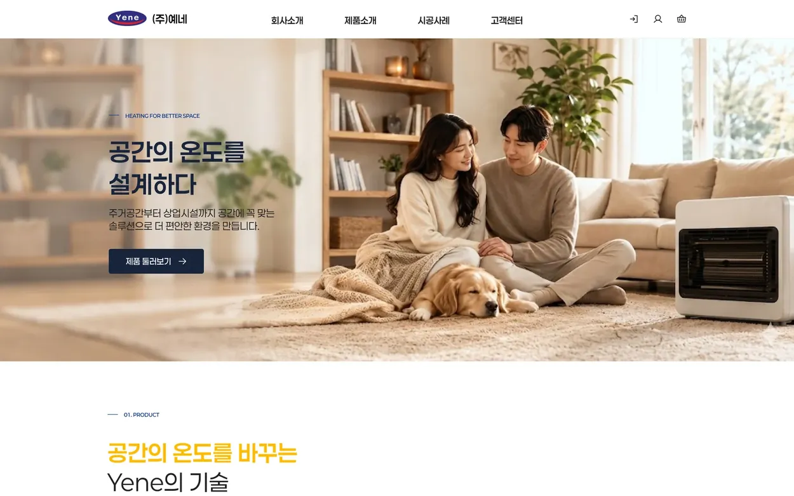</div>
  </div>
</section>
<section class="page gal" style="--panel:#f6f6f2; --ink:#14161c; --accent:#b5730a; --line2:#e2e2da">
  <div class="info">
    <div class="glabel">YENE · Design</div>
    <h2>화면 설계</h2>
    <div class="sub">Before(기존) · After(메인) · 상세페이지 · 제안서</div>
    <h5>Problem → Solution</h5>
    <ul class="ps">
      <li>모바일에서 화면이 잘리고 가로 스크롤 필요 <b>→</b> 주요 화면을 반응형으로 다시 구현</li>
      <li>긴 이미지·안내문이 맥락 없이 이어짐 <b>→</b> 효과 → 기능 그룹화 → 사용 공간 시각화의 설득 흐름</li>
      <li>메뉴·검색·퀵 동시 노출로 시작점 불분명 <b>→</b> 핵심 메뉴만 남겨 탐색 시작점을 명확히</li>
    </ul>
    <ul class="hl">
      <li>재설계 화면 7개 · 4개 핵심 메뉴로 단순화 · 100% 반응형</li>
      <li>완성한 제안서를 실제 인쇄해 (주)예네 앞으로 발송</li>
      <li>HTML·CSS·JS 초기 구현, GitHub·Vercel 배포</li>
    </ul>
  </div>
  <div class="cards">
    <div class="scard"><div class="bar"><i></i><i></i><i></i><u>Before · 기존 사이트</u></div>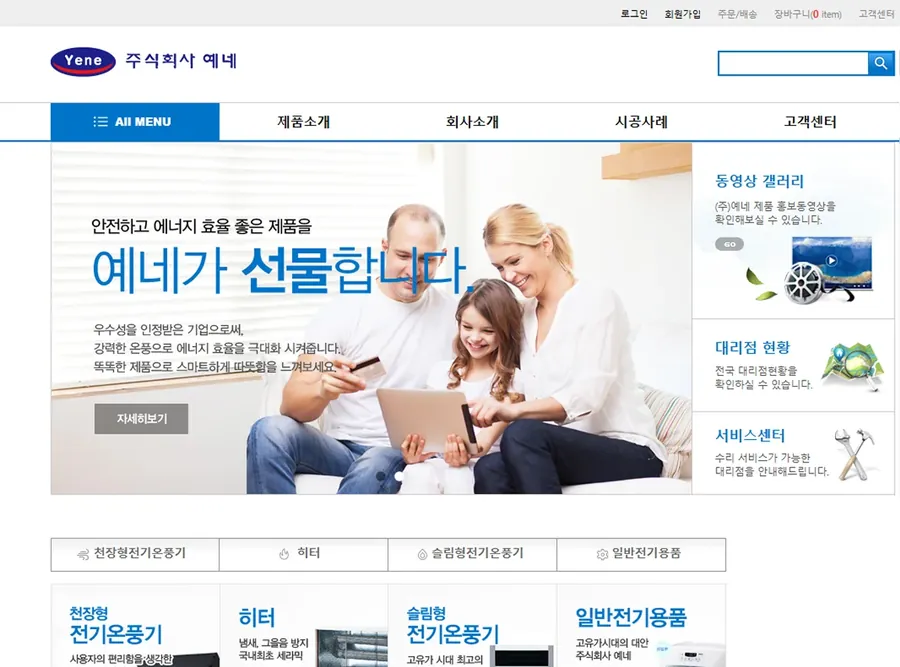</div>
    <div class="scard"><div class="bar"><i></i><i></i><i></i><u>After · 리디자인 메인</u></div></div>
    <div class="scard"><div class="bar"><i></i><i></i><i></i><u>제품 상세페이지</u></div>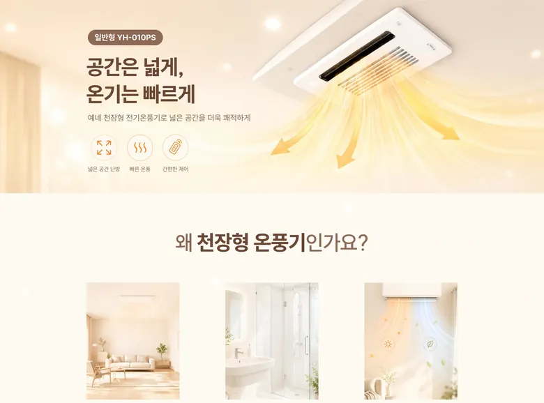</div>
    <div class="scard"><div class="bar"><i></i><i></i><i></i><u>리디자인 제안서</u></div>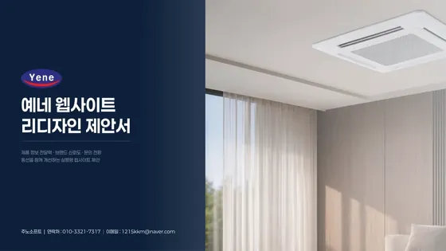</div>
  </div>
</section>

<!-- ================= 03 cozybrew ================= -->
<section class="page hero" style="--brand:#7a4a2b; --accent:#e0a56b; --panel:#f6efe6">
  <div class="left">
    <div class="num">03</div><span class="cat">Web Design · E-commerce · 개인</span>
    <h1>cozybrew</h1><div class="ubar"></div>
    <div class="tag">홈카페 에스프레소 브랜드</div>
    <div class="over">원두·머신·굿즈를 아우르는 커피 브랜드의 <b>풀 이커머스 경험</b>을 순수 웹 기술로 구현.</div>
    <div class="meta">
      <div><b>Role</b>기획·UI 디자인·퍼블리싱·프론트엔드 (100%)</div>
      <div><b>Period</b>2026.06.27 – 07.03</div>
      <div class="live"><b>Live</b>jhc2265.github.io/cozybrew</div>
    </div>
  </div>
  <div class="right">
    <div class="browser"><div class="bar"><i></i><i></i><i></i><u>jhc2265.github.io/cozybrew</u></div>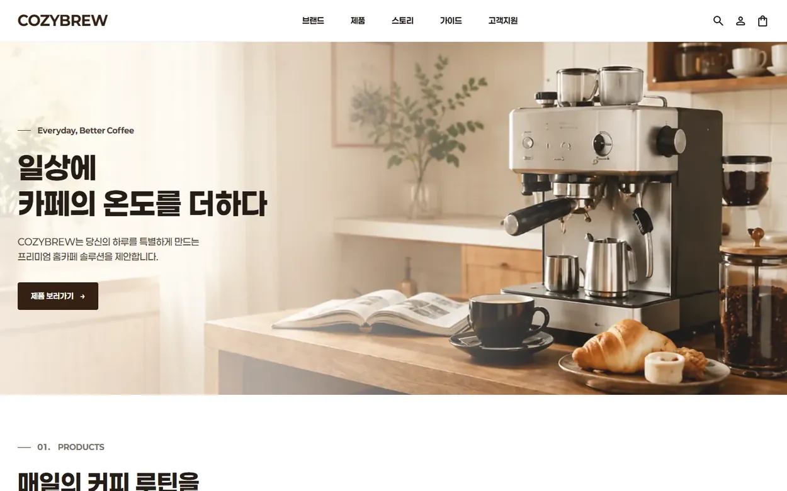</div>
  </div>
</section>
<section class="page gal" style="--panel:#f6efe6; --ink:#241c15; --accent:#a9683a; --line2:#e6dac8">
  <div class="info">
    <div class="glabel">cozybrew · Design</div>
    <h2>화면 설계</h2>
    <div class="sub">홈 · 상품 상세 · 장바구니 · 주문</div>
    <h5>Problem → Solution</h5>
    <ul class="ps">
      <li>제품 정보가 많으면 쇼핑몰이 딱딱해짐 <b>→</b> 따뜻한 카페 무드로 부담 없이 탐색하게 함</li>
      <li>PC·모바일 경험이 달라질 수 있음 <b>→</b> 반응형 구조로 어느 화면에서도 일관된 경험</li>
      <li>구매 흐름이 복잡해지기 쉬움 <b>→</b> localStorage로 상태를 유지하며 흐름을 단순하게</li>
    </ul>
    <ul class="hl">
      <li>총 36개 화면의 정보 구조·UI를 1인 설계·제작</li>
      <li>localStorage 상태관리로 로그인·장바구니 유지</li>
      <li>상품 19종·4카테고리 · 순수 JavaScript</li>
    </ul>
  </div>
  <div class="cards">
    <div class="scard"><div class="bar"><i></i><i></i><i></i><u>홈</u></div>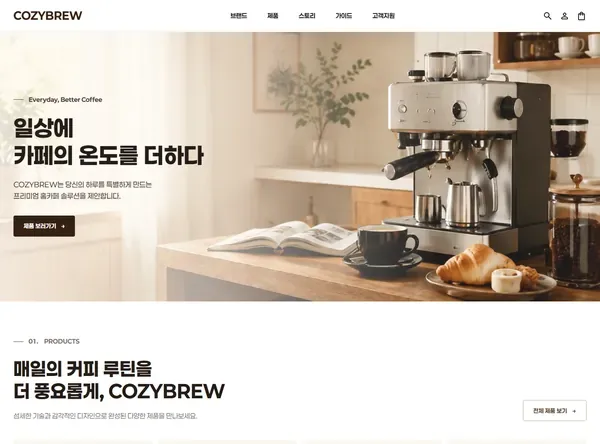</div>
    <div class="scard"><div class="bar"><i></i><i></i><i></i><u>상품 상세</u></div>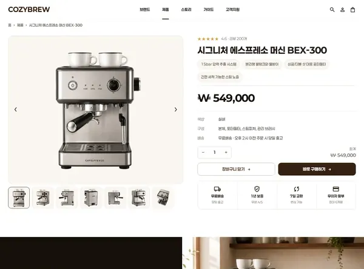</div>
    <div class="scard"><div class="bar"><i></i><i></i><i></i><u>장바구니</u></div>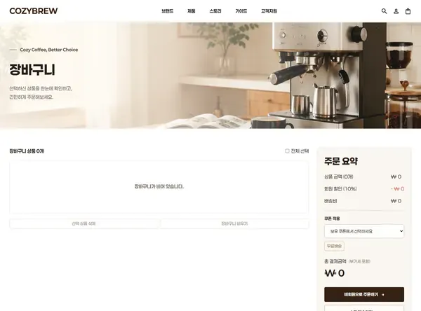</div>
    <div class="scard"><div class="bar"><i></i><i></i><i></i><u>주문</u></div>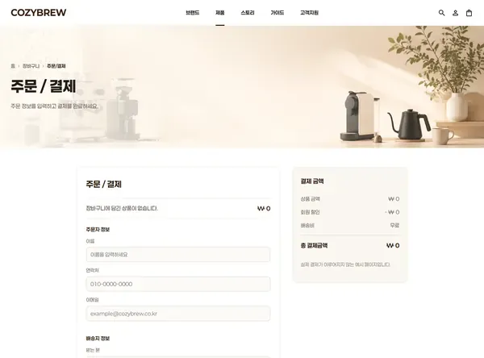</div>
  </div>
</section>

<!-- ================= 04 Cresto ================= -->
<section class="page hero" style="--brand:#012547; --accent:#4d84b5; --panel:#eef3f8">
  <div class="left">
    <div class="num">04</div><span class="cat">Web Design · 브랜드 커머스 · 개인</span>
    <h1>Cresto</h1><div class="ubar"></div>
    <div class="tag">세라믹 · 공예 라이프스타일 브랜드</div>
    <div class="over">파도·도자기·불완전함의 패턴을 담은 세라믹 공예 브랜드의 <b>브랜드 커머스 사이트</b>. 서사부터 커머스까지 30여 화면을 미니멀 톤으로.</div>
    <div class="meta">
      <div><b>Role</b>기획·UI 디자인·퍼블리싱·프론트엔드 (100%)</div>
      <div><b>Period</b>2026.07 (약 2주)</div>
      <div class="live"><b>Live</b>jhc2265.github.io/cresto</div>
    </div>
  </div>
  <div class="right">
    <div class="browser"><div class="bar"><i></i><i></i><i></i><u>jhc2265.github.io/cresto</u></div>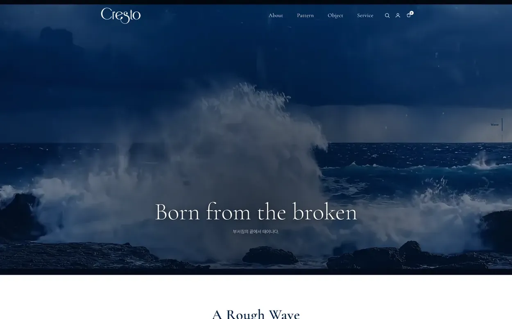</div>
  </div>
</section>
<section class="page gal" style="--panel:#eef3f8; --ink:#16233a; --accent:#2e5e86; --line2:#dbe4ee">
  <div class="info">
    <div class="glabel">Cresto · Design</div>
    <h2>화면 설계</h2>
    <div class="sub">브랜드 서사 · 상세 · 오브제 · 패턴</div>
    <h5>Problem → Solution</h5>
    <ul class="ps">
      <li>공예 브랜드도 평범한 쇼핑몰처럼 보이기 쉬움 <b>→</b> 에디토리얼 룩북 톤으로 '작품을 보는' 경험</li>
      <li>페이지가 제각각이면 브랜드가 흩어져 보임 <b>→</b> 공유 CSS와 디자인 토큰으로 전 페이지 톤 통일</li>
      <li>카탈로그가 정보 위주면 무미건조 <b>→</b> 여백·큰 이미지·세리프 타이포로 고급스러운 무드</li>
    </ul>
    <ul class="hl">
      <li>30+ 화면 · 1인 기획·디자인·개발 전 과정</li>
      <li>6개 실제 동작 커머스 플로우 (localStorage)</li>
      <li>순수 JavaScript · GitHub Pages 배포</li>
    </ul>
  </div>
  <div class="cards">
    <div class="scard"><div class="bar"><i></i><i></i><i></i><u>브랜드 서사</u></div>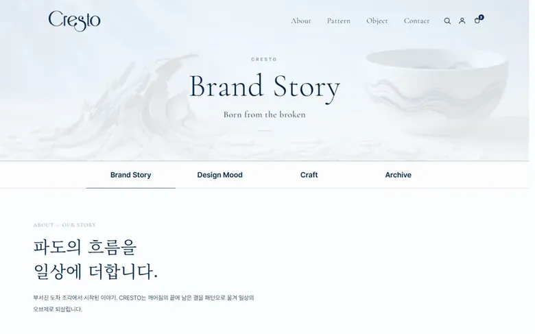</div>
    <div class="scard"><div class="bar"><i></i><i></i><i></i><u>상품 상세</u></div>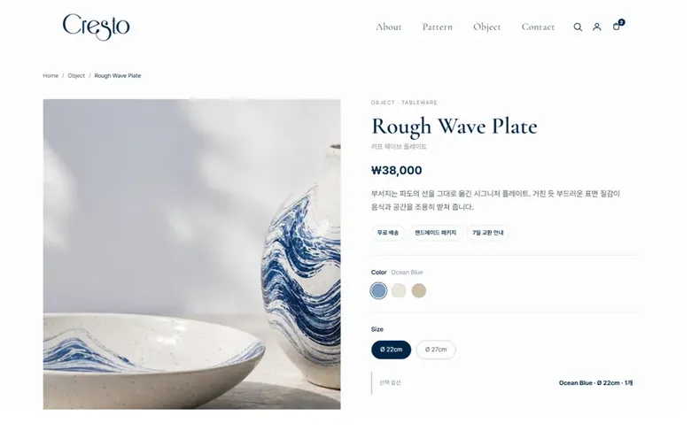</div>
    <div class="scard"><div class="bar"><i></i><i></i><i></i><u>오브제</u></div>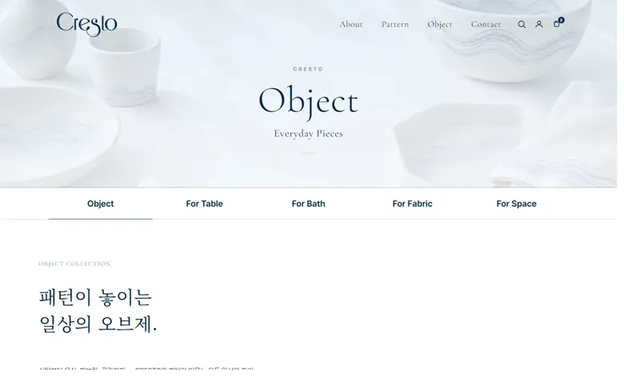</div>
    <div class="scard"><div class="bar"><i></i><i></i><i></i><u>패턴</u></div>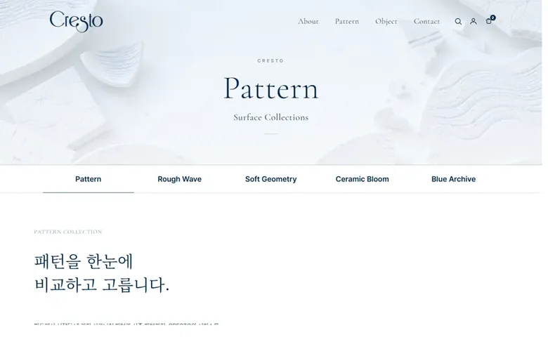</div>
  </div>
</section>

<!-- ================= 05 사각사각문구점 ================= -->
<section class="page hero" style="--brand:#cf6b52; --accent:#ffd8cb; --panel:#fdf3ee">
  <div class="left">
    <div class="num">05</div><span class="cat">Web Design · E-commerce · 개인</span>
    <h1>사각사각문구점</h1><div class="ubar"></div>
    <div class="tag">감성 문구 브랜드</div>
    <div class="over">문구 브랜드의 쇼핑 경험 전체를 <b>하나의 무드</b>로 설계. 파스텔 수채 일러스트로 아기자기하고 따뜻한 감성을.</div>
    <div class="meta">
      <div><b>Role</b>기획·UI 디자인·퍼블리싱·프론트엔드 (100%)</div>
      <div><b>Period</b>2026.06.21 – 06.24</div>
      <div class="live"><b>Live</b>jhc2265.github.io/sagaksagak</div>
    </div>
  </div>
  <div class="right">
    <div class="browser"><div class="bar"><i></i><i></i><i></i><u>jhc2265.github.io/sagaksagak</u></div>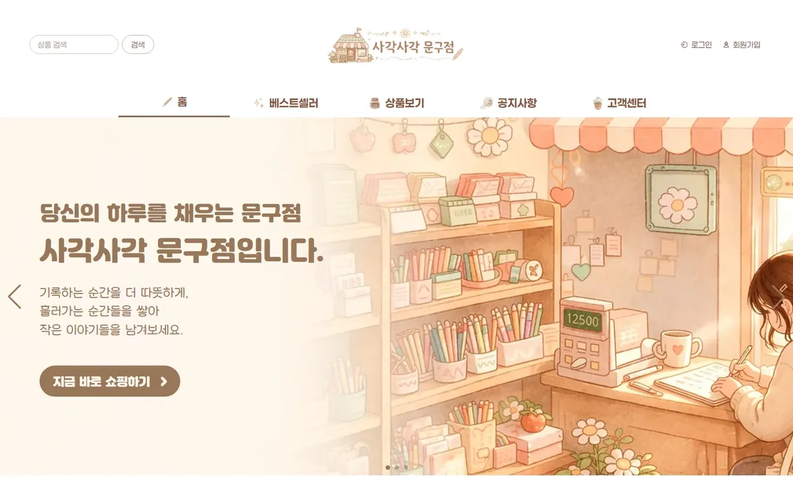</div>
  </div>
</section>
<section class="page gal" style="--panel:#fdf3ee; --ink:#4a3b34; --accent:#cf6b52; --line2:#f0ded4">
  <div class="info">
    <div class="glabel">사각사각 · Design</div>
    <h2>화면 설계</h2>
    <div class="sub">홈 · 상품 · 결제 · 마이페이지</div>
    <h5>Problem → Solution</h5>
    <ul class="ps">
      <li>문구 종류가 많아 나열하면 산만 <b>→</b> 파스텔 일러스트 무드로 아기자기하게 정리</li>
      <li>백엔드 없이 로그인·장바구니·찜 유지 <b>→</b> localStorage에 상태 구조화, 26개 페이지 공유</li>
      <li>고해상도 일러스트로 첫 로딩이 무거움 <b>→</b> 전체 WebP 변환으로 92% 경량화 (93→7.5MB)</li>
    </ul>
    <ul class="hl">
      <li>직접 설계한 화면 26개 · 1인 전 과정</li>
      <li>이미지 92% 경량화 (93MB → 7.5MB)</li>
      <li>순수 JavaScript · 프레임워크 없이 구현</li>
    </ul>
  </div>
  <div class="cards">
    <div class="scard"><div class="bar"><i></i><i></i><i></i><u>홈</u></div>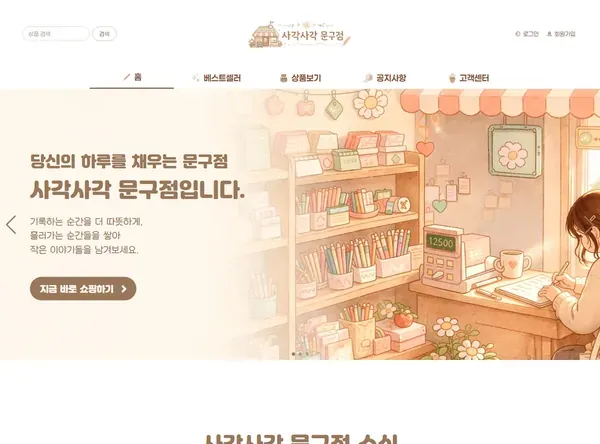</div>
    <div class="scard"><div class="bar"><i></i><i></i><i></i><u>상품</u></div>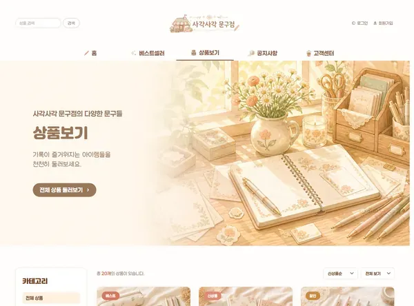</div>
    <div class="scard"><div class="bar"><i></i><i></i><i></i><u>결제</u></div>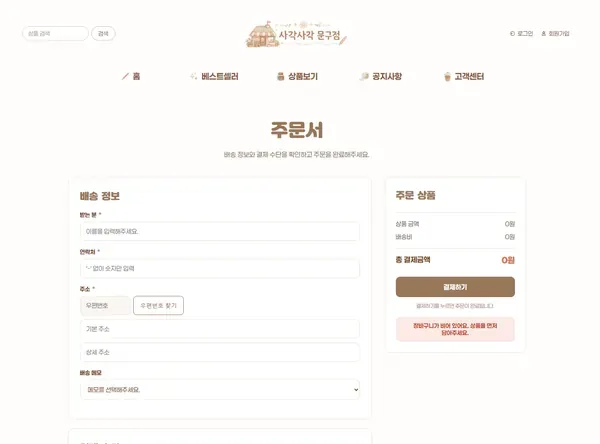</div>
    <div class="scard"><div class="bar"><i></i><i></i><i></i><u>마이페이지</u></div>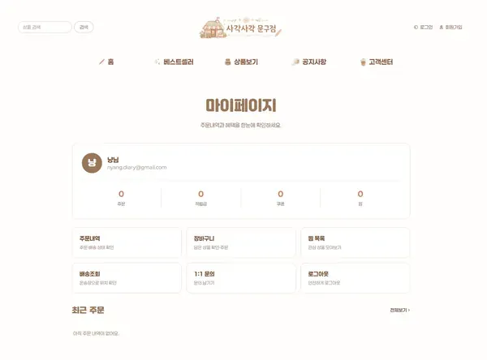</div>
  </div>
</section>

<!-- ================= 06 enoughday ================= -->
<section class="page hero" style="--brand:#c8712a; --accent:#ffcf9a; --panel:#faf1e2">
  <div class="left">
    <div class="num">06</div><span class="cat">Web App · 개인</span>
    <h1>enoughday</h1><div class="ubar"></div>
    <div class="tag">오늘은 여기까지</div>
    <div class="over">부담 없는 투두에 <b>유머 한 스푼</b>. 실패한 일은 구름 마스코트가 대신 재치있는 핑계를 만들어 줍니다.</div>
    <div class="meta">
      <div><b>Role</b>기획·UI·프론트엔드·Firebase 백엔드 (100%)</div>
      <div><b>Period</b>2026.06.17 – 06.24</div>
      <div class="live"><b>Live</b>jhc2265.github.io/enoughday</div>
    </div>
  </div>
  <div class="right">
    <div class="browser"><div class="bar"><i></i><i></i><i></i><u>jhc2265.github.io/enoughday</u></div>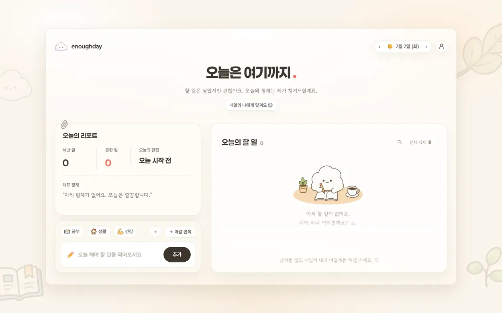</div>
  </div>
</section>
<section class="page gal" style="--panel:#faf1e2; --ink:#4a3a28; --accent:#c8712a; --line2:#eaddc9">
  <div class="info">
    <div class="glabel">enoughday · Design</div>
    <h2>화면 설계</h2>
    <div class="sub">데스크톱 · 모바일</div>
    <h5>Problem → Solution</h5>
    <ul class="ps">
      <li>투두 앱은 못 지키면 죄책감·부담 <b>→</b> 실패한 일에 재치있는 '핑계'를 붙여 부담을 덜고 웃게 함</li>
      <li>기기 간에 할 일을 이어 보고 싶음 <b>→</b> Firebase Auth·Firestore로 로그인·백업·실시간 동기화</li>
      <li>매번 수동 배포는 번거롭고 실수 <b>→</b> GitHub Actions CI로 커밋만으로 이중 배포 자동화</li>
    </ul>
    <ul class="hl">
      <li>핑계 말투 톤 5종 선택 · 비로그인 미리보기</li>
      <li>GitHub Pages·Firebase Hosting 이중 배포 + CI</li>
      <li>1인 풀사이클 · Firebase 백엔드</li>
    </ul>
  </div>
  <div class="duo">
    <div class="scard"><div class="bar"><i></i><i></i><i></i><u>jhc2265.github.io/enoughday</u></div></div>
    <div class="ph">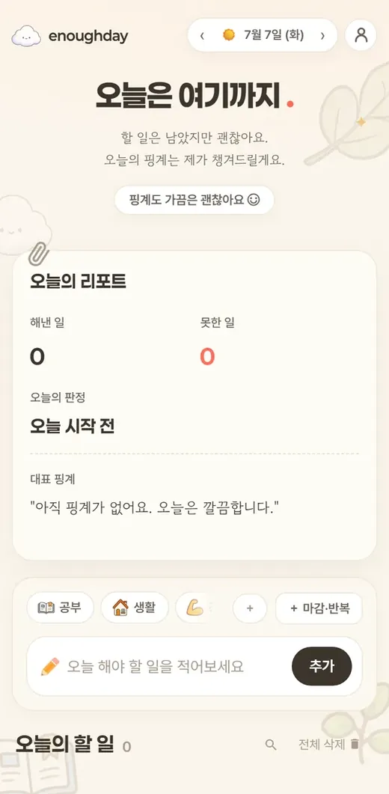</div>
  </div>
</section>

<!-- ================= 07 Camp Lium ================= -->
<section class="page hero" style="--brand:#3a4e38; --accent:#a7c39a; --panel:#f8f1df">
  <div class="left">
    <div class="num">07</div><span class="cat">Web Design · 브랜드 랜딩 · 개인</span>
    <h1>Camp Lium</h1><div class="ubar"></div>
    <div class="tag">숲과 호수의 아웃도어 캠핑 브랜드</div>
    <div class="over">숲·호수·별빛을 콘셉트로 한 캠핑장 브랜드 <b>랜딩</b>. 종이 질감과 수채 일러스트로 '가서 쉬고 싶은' 무드를 한 페이지에.</div>
    <div class="meta">
      <div><b>Role</b>기획·UI 디자인·퍼블리싱 (100%)</div>
      <div><b>Period</b>2026.07</div>
      <div class="live"><b>Live</b>jhc2265.github.io/camplium</div>
    </div>
  </div>
  <div class="right">
    <div class="browser"><div class="bar"><i></i><i></i><i></i><u>jhc2265.github.io/camplium</u></div>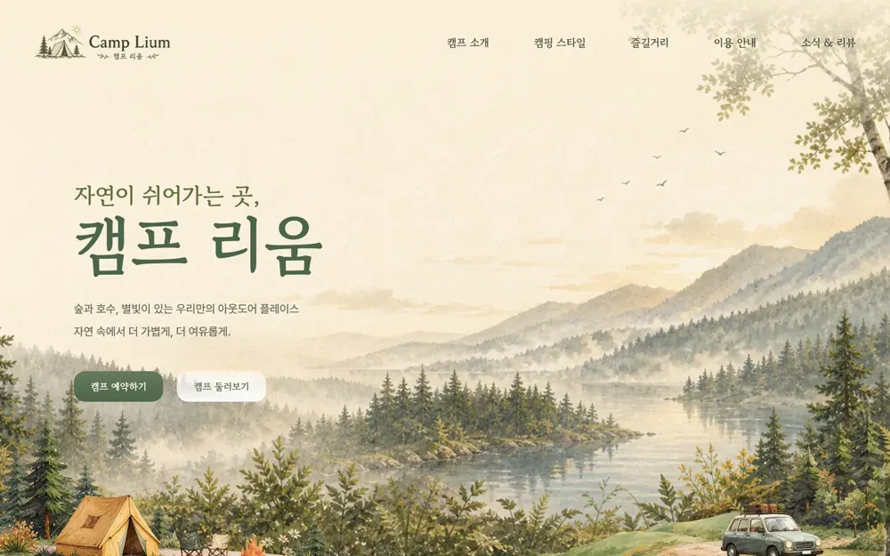</div>
  </div>
</section>
<section class="page gal" style="--panel:#f8f1df; --ink:#3b3527; --accent:#4b654c; --line2:#e7dcc4">
  <div class="info">
    <div class="glabel">Camp Lium · Design</div>
    <h2>화면 설계</h2>
    <div class="sub">히어로 · 소개 · 액티비티 · 스타일</div>
    <h5>Problem → Solution</h5>
    <ul class="ps">
      <li>캠핑장 사이트는 정보 나열에 그쳐 감성이 약함 <b>→</b> 종이·수채 무드로 '가서 쉬고 싶은' 감성을 먼저</li>
      <li>정보가 많아 산만해지기 쉬움 <b>→</b> 섹션을 스토리 흐름으로 정리해 자연스럽게 예약까지 안내</li>
      <li>큰 일러스트로 무겁고 복잡해 보일 수 있음 <b>→</b> 여백과 톤을 통일해 가볍고 정돈된 인상</li>
    </ul>
    <ul class="hl">
      <li>히어로→소개→스타일→액티비티→후기 스토리형 싱글 페이지</li>
      <li>torn-paper 섹션 구분 + 수채 콜라주 아트디렉션</li>
      <li>CSS Grid·Flexbox 반응형 · GitHub Pages 배포</li>
    </ul>
  </div>
  <div class="cards">
    <div class="scard"><div class="bar"><i></i><i></i><i></i><u>히어로</u></div>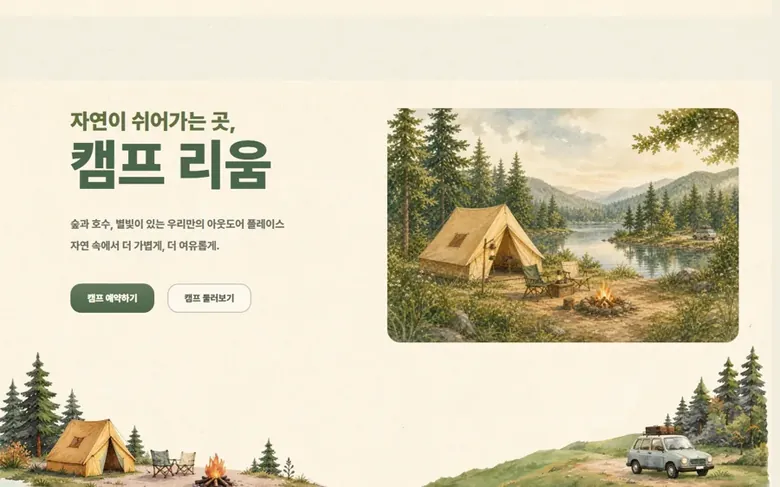</div>
    <div class="scard"><div class="bar"><i></i><i></i><i></i><u>소개</u></div>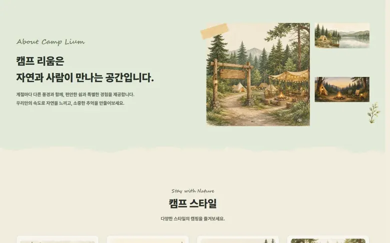</div>
    <div class="scard"><div class="bar"><i></i><i></i><i></i><u>액티비티</u></div>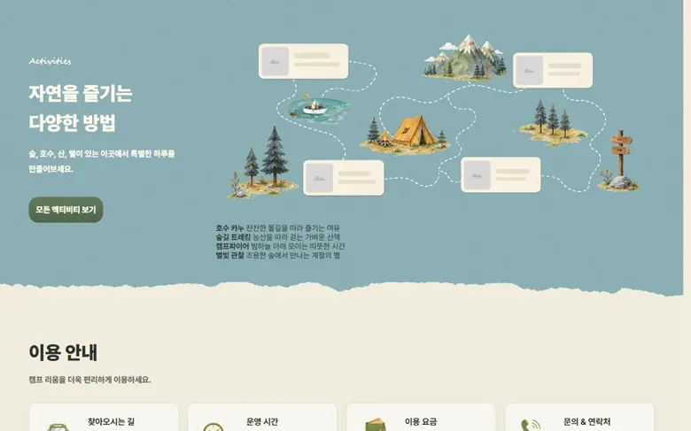</div>
    <div class="scard"><div class="bar"><i></i><i></i><i></i><u>스타일</u></div>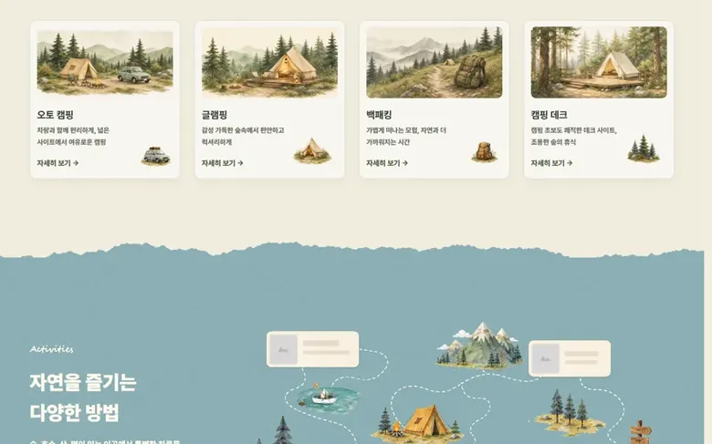</div>
  </div>
</section>

<!-- ================= 08 Cyberpunk ================= -->
<section class="page hero" style="--brand:#05060a; --accent:#fcee0a; --panel:#0c0e16">
  <div class="left">
    <div class="num">08</div><span class="cat">Web Design · 팬 리디자인 · 개인</span>
    <h1>Cyberpunk 2077</h1><div class="ubar"></div>
    <div class="tag">나이트 시티 아카이브</div>
    <div class="over">사이버펑크 2077의 세계관을 <b>인터랙티브 아카이브</b>로 재해석한 팬 리디자인 콘셉트. 다크 네온 무드의 몰입감을 반응형으로.</div>
    <div class="meta">
      <div><b>Role</b>기획·UI 디자인·퍼블리싱·프론트엔드 (100%)</div>
      <div><b>Period</b>2026.06.15 – 06.23</div>
      <div class="live"><b>Live</b>jhc2265.github.io/cyberpunk2077</div>
    </div>
  </div>
  <div class="right">
    <div class="browser" style="border-color:#232838"><div class="bar" style="background:#11131c"><i style="background:#333"></i><i style="background:#333"></i><i style="background:#333"></i><u style="color:#6a7088">jhc2265.github.io/cyberpunk2077</u></div>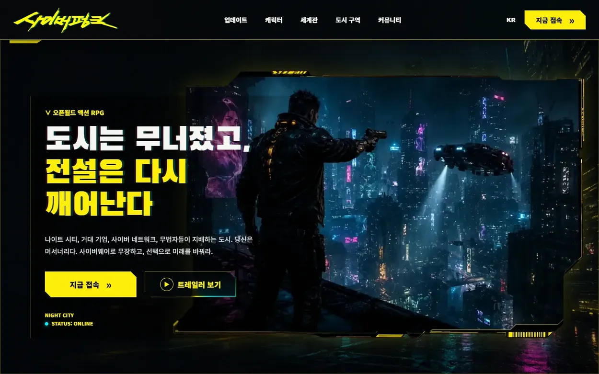</div>
  </div>
</section>
<section class="page gal dark" style="--panel:#0c0e16; --ink:#e9eaf0; --accent:#fcee0a; --line2:#232838">
  <div class="info">
    <div class="glabel">Cyberpunk · Design</div>
    <h2>화면 설계</h2>
    <div class="sub">히어로 · 월드 · 디스트릭트 · 캐릭터</div>
    <h5>Problem → Solution</h5>
    <ul class="ps">
      <li>원작 무드를 못 살리면 그저 그런 웹 <b>→</b> 다크 네온·글리치 무드로 원작 감성을 재현</li>
      <li>영상·인터랙션이 많아 성능이 흔들림 <b>→</b> 기기별 분기 재생과 이미지 경량화로 안정적 동작</li>
      <li>라이브러리에 기대면 배우는 의미가 줆 <b>→</b> 순수 HTML·CSS·JS로 글리치·네온·인터랙션 직접 구현</li>
    </ul>
    <ul class="hl">
      <li>이미지 93% 경량화 (53.6 → 4.0MB)</li>
      <li>100% 순수 JavaScript · 라이브러리 없이</li>
      <li>1인 기획·디자인·개발 · 반응형</li>
    </ul>
  </div>
  <div class="cards">
    <div class="scard"><div class="bar"><i></i><i></i><i></i><u>히어로</u></div>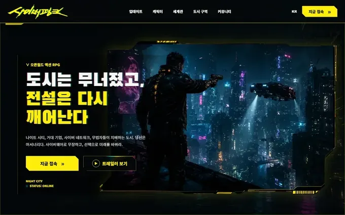</div>
    <div class="scard"><div class="bar"><i></i><i></i><i></i><u>월드</u></div>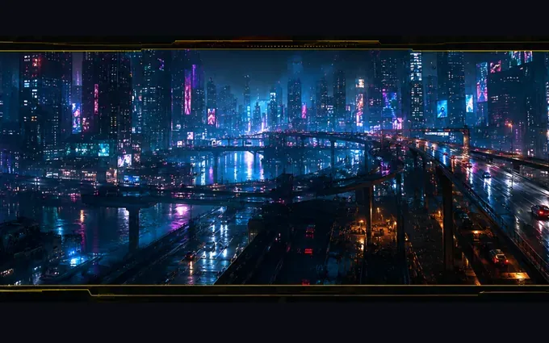</div>
    <div class="scard"><div class="bar"><i></i><i></i><i></i><u>디스트릭트</u></div>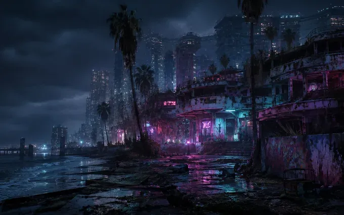</div>
    <div class="scard"><div class="bar"><i></i><i></i><i></i><u>캐릭터</u></div>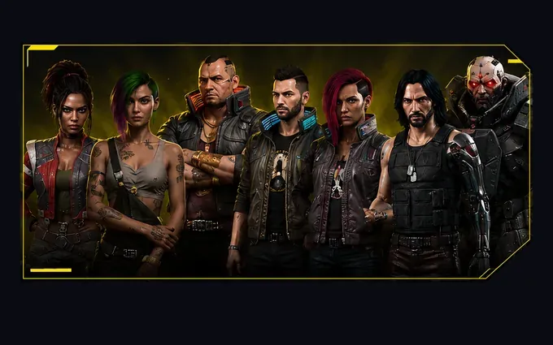</div>
  </div>
</section>

<!-- ================= WORK: BANNERS ================= -->
<section class="page work">
  <div class="kick">Work · Banner Design</div>
  <hr class="rule">
  <p class="note">이벤트·게임·커머스·프로모션·전시 등 다양한 목적의 배너 디자인 33종. 목적에 맞는 톤·타이포·레이아웃으로 메시지를 빠르게 전달합니다.</p>
  <div class="bgrid">
    <figure>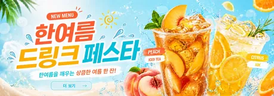</figure>
    <figure>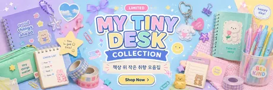</figure>
    <figure>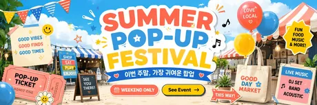</figure>
    <figure>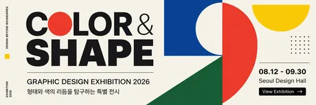</figure>
    <figure>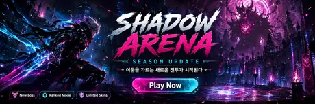</figure>
    <figure>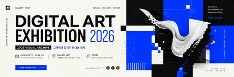</figure>
    <figure>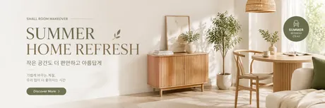</figure>
    <figure>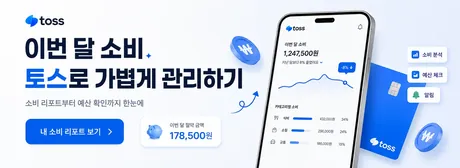</figure>
    <figure>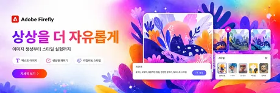</figure>
    <figure>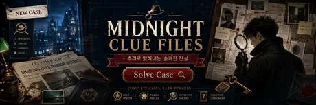</figure>
    <figure></figure>
    <figure>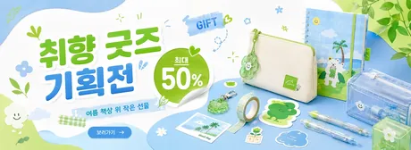</figure>
    <figure>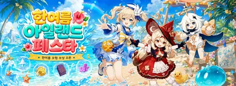</figure>
    <figure></figure>
    <figure>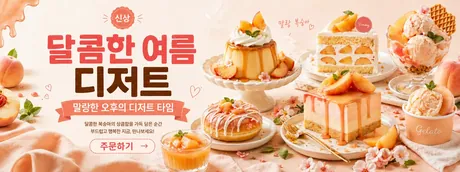</figure>
    <figure>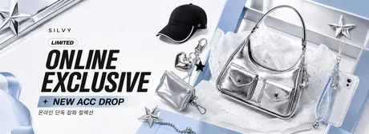</figure>
    <figure></figure>
    <figure></figure>
    <figure></figure>
    <figure></figure>
    <figure></figure>
    <figure></figure>
    <figure></figure>
    <figure></figure>
    <figure></figure>
    <figure></figure>
    <figure></figure>
    <figure></figure>
    <figure></figure>
    <figure></figure>
    <figure></figure>
    <figure></figure>
    <figure></figure>
  </div>
</section>

<!-- ================= WORK: VISUAL GRAPHIC ================= -->
<section class="page work">
  <div class="kick">Work · Visual Graphic</div>
  <hr class="rule">
  <p class="note">패키지·에디토리얼·전시 아이덴티티·서피스 패턴·타이포그래피 등 조사·분석부터 최종 디자인까지 진행한 그래픽 프로젝트.</p>
  <div class="ggrid">
    <figure>
      <div class="im"></div>
      <div class="t">fresh<small>Package · Branding</small></div>
      <div class="d">시리얼 브랜드 'fresh' 패키지 디자인. 조사·분석부터 네이밍·최종까지.</div>
    </figure>
    <figure>
      <div class="im"></div>
      <div class="t">Algorithm<small>Pattern · Editorial</small></div>
      <div class="d">일상 행동을 그리드·패턴으로 시각화한 에디토리얼 프로젝트.</div>
    </figure>
    <figure>
      <div class="im"></div>
      <div class="t">Sonia Delaunay<small>Branding · Pattern</small></div>
      <div class="d">소니아 들로네 전시 아이덴티티·패턴·굿즈 시스템.</div>
    </figure>
    <figure>
      <div class="im"></div>
      <div class="t">A Rough Wave<small>Surface · Pattern</small></div>
      <div class="d">거친 파도의 물보라에서 추출한 서피스 패턴 디자인.</div>
    </figure>
    <figure>
      <div class="im"></div>
      <div class="t">고양이<small>Typography · Hangul</small></div>
      <div class="d">고양이를 주제로 한 한글 타이포그래피·서체 디자인.</div>
    </figure>
  </div>
</section>

<!-- ================= CONTACT ================= -->
<section class="page contact">
  <div class="kick" style="color:#8a847a; margin-bottom:8mm">Contact</div>
  <div class="big">함께 만들고 싶습니다.</div>
  <div class="sub">보기 좋은 화면을 넘어, 정보가 행동으로 이어지는 흐름을 설계합니다. 디자인과 개발을 잇는 작업이 필요하시면 언제든 연락 주세요.</div>
  <div class="cinfo">
    <div><b>Email</b><span>jhc2265@gmail.com</span></div>
    <div><b>Tel</b><span>010-8947-2759</span></div>
    <div><b>GitHub</b><span>github.com/jhc2265</span></div>
    <div><b>Portfolio</b><span>jhc2265.github.io/portfolio</span></div>
  </div>
  <div class="cfoot"><span>JO HYEON CHAE · 조현채</span><span>Visual · Graphic / UI · UX Designer</span></div>
</section>
